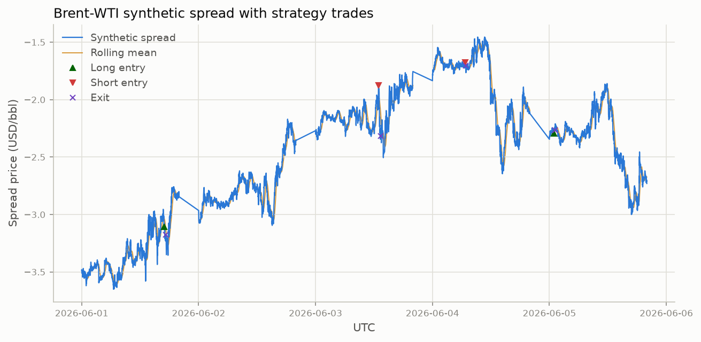
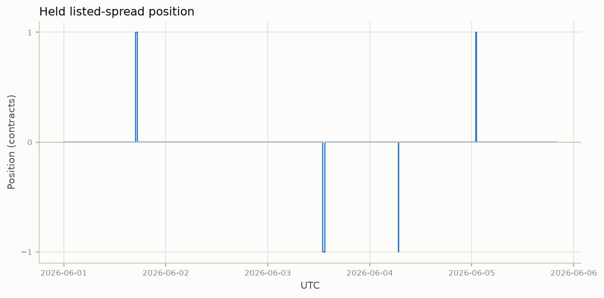
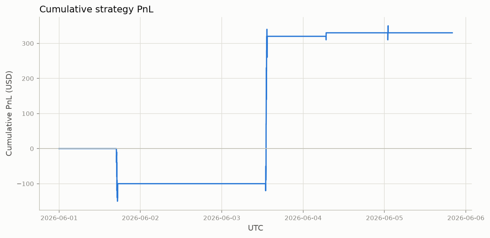
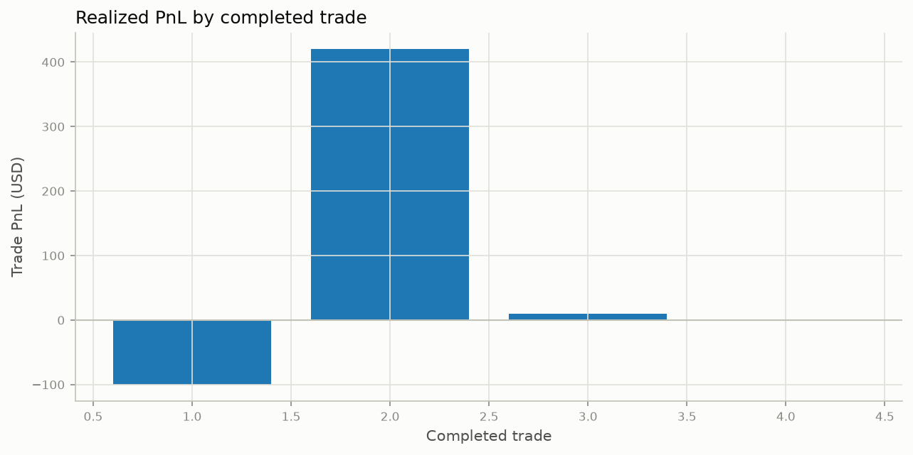

Strategy Results#
Backtest of the final specification on the June 1–5, 2026 pilot week, produced
by doit run_strategy and doit plot_strategy_results
(src/strategy_engine.py, src/plot_strategy_results.py). Every figure and
number on this page comes from _output/brent_wti_strategy_1m.parquet.
Full Strategy Overview documents the design with the thresholds deliberately left open. This page pins them down and reports what the specification actually did.
Headline#
The strategy finished the week at +$330 on 4 trades across 6,000 eligible minutes. That number should not be read as an edge. One trade contributed +$420; the other three combined for −$90. With a sample this small, the result is indistinguishable from zero, and the honest conclusion is that the pilot week neither confirms nor refutes the economic intuition.
The more useful output is why only four trades fired. See Why only four trades below.
Final parameters#
The production values in src/strategy_engine.py:
Parameter |
Value |
Meaning |
|---|---|---|
|
|
One-minute observations per rolling window |
|
|
Absolute z-score required to propose entry |
|
|
Maximum estimated half-life, in minutes |
|
|
Exit when |
|
|
Maximum mark-to-market loss per trade, USD |
|
|
Maximum holding period, in one-minute bars |
|
|
Both stationarity tests required, at 5% |
The session runs 00:00–19:59 UTC, at most one listed-spread contract is held at
a time, and P&L uses the CLN6-BZQ6 listed bid/ask with a 1,000-barrel
multiplier. Long positions enter at the ask and exit at the bid; shorts enter
at the bid and cover at the ask, so the quoted spread is paid on every
round trip.
Summary statistics#
Metric |
Value |
|---|---|
Trades |
4 |
Total P&L |
+$330 |
Mean P&L per trade |
+$82.50 |
Median P&L per trade |
+$5.00 |
Best trade |
+$420 |
Worst trade |
−$100 |
Profitable / losing / flat |
2 / 1 / 1 |
Gross profit / gross loss |
+$430 / −$100 |
Maximum drawdown of cumulative P&L |
−$150 |
Mean holding period |
16.2 min |
Longest holding period |
30 min (time stop) |
Long / short |
2 / 2 |
Exits split 3 mean-reversion and 1 time stop. The $1,000 stop-loss and the end-of-session exit never triggered, so no trade was force-closed by risk limits or by the 19:59 UTC cutoff.
Trade log#
All four trades, in order:
# |
Entry (UTC) |
Exit (UTC) |
Side |
Entry z |
Half-life |
Entry |
Exit |
Min held |
P&L |
Exit reason |
|---|---|---|---|---|---|---|---|---|---|---|
1 |
06-01 16:54 |
06-01 17:18 |
Long |
−2.88 |
0.9 |
−3.09 |
−3.19 |
24 |
−$100 |
mean reversion |
2 |
06-03 12:55 |
06-03 13:25 |
Short |
+2.81 |
13.2 |
−1.89 |
−2.31 |
30 |
+$420 |
time stop |
3 |
06-04 06:45 |
06-04 06:47 |
Short |
+2.55 |
0.8 |
−1.68 |
−1.69 |
2 |
+$10 |
mean reversion |
4 |
06-05 00:57 |
06-05 01:06 |
Long |
−2.54 |
0.4 |
−2.27 |
−2.27 |
9 |
$0 |
mean reversion |
Two details are worth noting. Trade 1 reverted in z-score terms — it exited at z = −0.48, exactly as designed — and still lost $100, because the reversion of the synthetic spread did not cover the round-trip cost of crossing the listed spread. Trade 2, the only materially profitable one, did not revert at all: it was closed by the 30-minute time stop at z = −1.01, having overshot through the mean rather than settling at it. The strategy’s single winner came from the exit rule that exists as a safeguard, not from the thesis.
Spread and trades#
Synthetic spread with its rolling mean, entry markers, and exits. The four entries are sparse against a week in which the spread traveled from about −$3.50/bbl to −$1.50/bbl and back.

Position#
Long, short, and flat through the week. The strategy is flat for 5,935 of 6,000 minutes — it holds a position for only 65 minutes, roughly 1% of the sample.

Cumulative P&L#
Executable cumulative P&L. The step structure makes the concentration obvious: a drawdown to −$150 during trade 1, then a single jump on trade 2 that accounts for the entire final figure, then essentially flat.

Per-trade P&L#
Realized P&L per completed trade, which is the same story as a bar chart: one outlier and three trades near zero.

Why only four trades#
Each one-minute bar passes through the entry gates in sequence, and a bar is only evaluated while the strategy is flat. Counting how many bars survive each gate localizes the bottleneck:
Gate |
Evaluated |
Passed |
Pass rate |
|---|---|---|---|
Bars in session (00:00–19:59 UTC) |
6,000 |
6,000 |
100.0% |
Flat, so eligible for entry |
6,000 |
5,935 |
98.9% |
Complete single-regime window |
5,935 |
5,760 |
97.1% |
Deviation beyond 2.5σ |
5,760 |
229 |
4.0% |
ADF and KPSS both pass |
229 |
4 |
1.7% |
Half-life ≤ 15 min |
4 |
4 |
100.0% |
Executable listed quote present |
4 |
4 |
100.0% |
Not the final bar of a session |
4 |
4 |
100.0% |
The stationarity gate is the binding constraint. The 2.5σ deviation test is selective but not prohibitive: 229 bars breach the threshold, roughly 46 candidate entries per day. Requiring the same 30-bar window to pass both ADF and KPSS at the 5% level removes 225 of those 229, a 98.3% rejection rate. Everything downstream is free — the half-life estimate, the executable-quote check, and the session-end check reject nothing at all.
Splitting the two tests shows the rejection is almost entirely one of them. Across all 232 candidate windows that breach 2.5σ (the 229 above plus 3 that occur while a position is already open, so they are never evaluated for entry):
Stationarity test |
Windows passed |
Pass rate |
|---|---|---|
ADF alone |
5 |
2.2% |
KPSS alone |
114 |
49.1% |
Both, as configured |
4 |
1.7% |
KPSS admits about half the candidates; ADF rejects 227 of 232 on its own. The conjunction is barely more restrictive than ADF by itself.
The likely reason is statistical power, not non-stationarity. ADF is being
asked to reject a unit root from 30 observations, and at that sample size it
has very little power to do so — the test fails to reject almost regardless of
the underlying process. Because the gate is written to require rejection
(adf_pvalue < 0.05) as its evidence for mean reversion, a low-power test
becomes a near-universal veto. The window length was chosen from the diagnostics
in Spread Diagnostics, where 30 minutes is the horizon
at which the deviation actually oscillates; that choice is sound for the signal
but leaves ADF with too few points to say anything.
The half-life gate is likewise inert at 15 minutes. Three of the four accepted windows estimated half-lives under one minute (0.9, 0.8, and 0.4), far inside the limit.
What we would change next#
The gate funnel points at specific, testable changes rather than a threshold sweep:
Give ADF a longer window, or drop it. Decoupling the stationarity window from the 30-bar signal window is the flexibility Full Strategy Overview anticipated but the implementation does not use:
stationarity_test()is always handed the same window as the z-score. Testing a few hundred bars would give ADF enough observations to be informative. Running withUSE_ADF = Falseis the one-line version of the same experiment and would raise the candidate count from 4 to roughly 114.Require the expected reversion to clear costs. Trade 1 reverted correctly and still lost money. An entry filter comparing the expected reversion in dollars against the listed spread’s quoted width — which Spread Diagnostics shows is around $0.05/bbl, or $50 per contract, in the liquid hours — would have declined it.
Extend the sample. Four trades cannot support any conclusion. The costly input is Databento data, not compute; the pipeline is already parameterized by date range in
src/pull_databento.py.
Reproducing#
doit run_strategy # -> _output/brent_wti_strategy_1m.parquet
doit plot_strategy_results # -> _output/figures/strategy_0*.png
Both are part of the default doit chain. The per-bar backtest output is
documented in
Brent-WTI Strategy Backtest (1-minute).